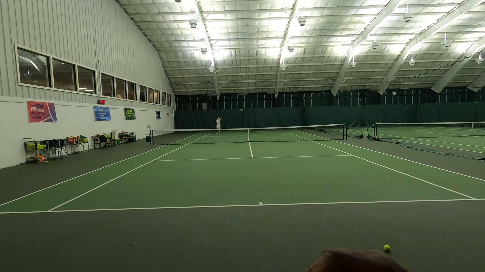
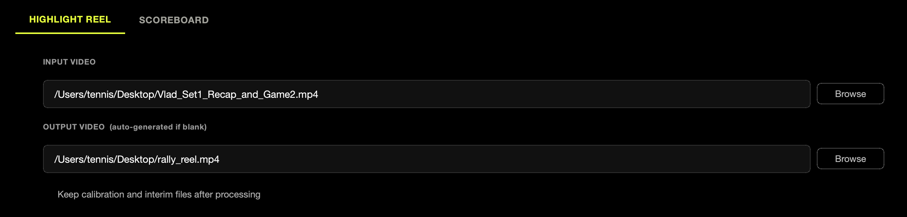
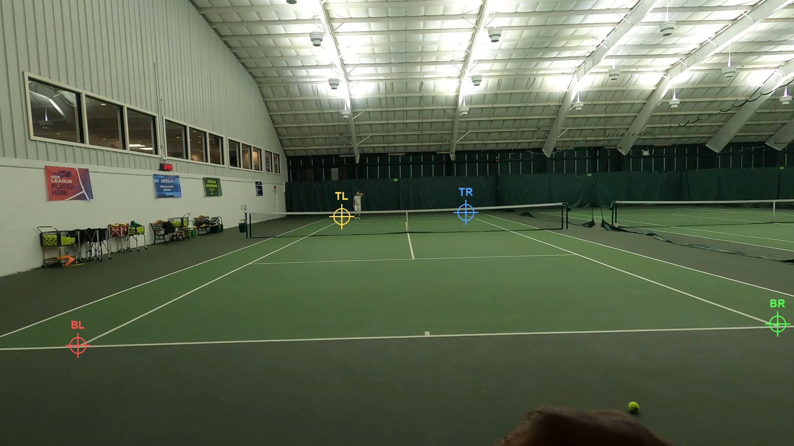
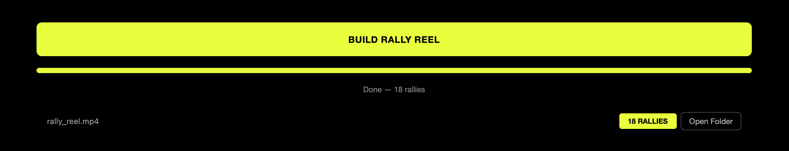
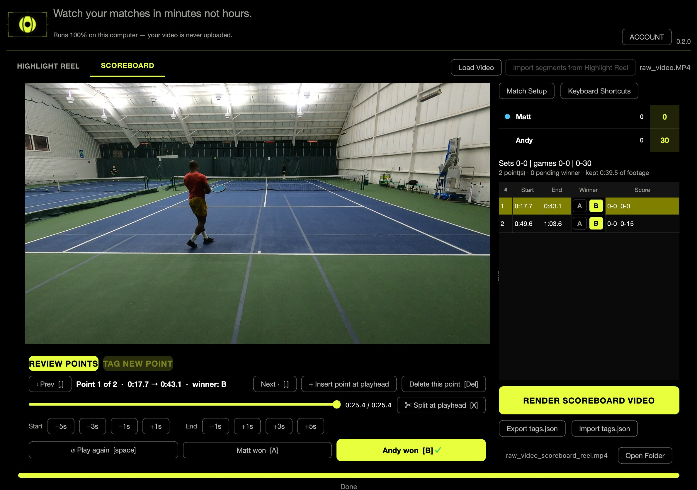

“I created Anya Tennis so you can watch your tennis match without all the dead time. Anya means eye in Igbo — the Nigerian language my family speaks. I want you to be able to see the match and your game easily. The process is simple: you record your match, load it in the software, and it outputs the active match play. The inner workings are over a year of neural network and ML development, pioneered by me — tennis coach, biomechanics expert, and AI-forward developer.”
Your match, with the dead time taken out.
A 90-minute tennis match holds about 20 minutes of tennis. The rest is walking back, picking up balls, towelling off and waiting to serve. Anya Tennis watches the recording, finds where each point starts and ends, and gives you back a reel of only the rallies — on your own computer, with the video never leaving it.
There are two ways to use it, and neither needs the other. The rally reel watches your match and cuts the dead time out by itself. The scoreboard lets you tag points and render a reel with the score on it. Most people start with the first.
THE RALLY REEL, STEP BY STEP
1
Record the match
One camera, behind a baseline, high enough that the whole court stays in frame — a phone on a fence clip or a GoPro on a tripod is plenty. No markers, no special court, no second angle.
If your camera splits a long recording into chapters, select all of them at once. Anya Tennis joins them into one video before it starts, so a point that straddles a chapter boundary is not lost.

2
Point it at the video
Open the Highlight Reel tab, browse to your match file, and leave the output path blank unless you want the reel written somewhere particular — it is generated next to the input if you don't. That is the whole setup.

3
Click the four corners of the court — once
A single frame of your match opens and you click the court's four corners in order: bottom-left, bottom-right, top-right, top-left. This is the only thing Anya Tennis ever asks you to do by hand, and it takes about ten seconds.
Those four clicks are what turn pixels into a court — where the baselines are, which half of the frame is the near player, how far up the image a metre is worth. They are cached beside the video, so running the same match again never asks twice.

4
Press BUILD RALLY REEL and leave it
From here it runs on its own through seven stages, naming each one as
it goes so you can see where it is. When it finishes, the status line
reads Done — 18 rallies (or however many your match had),
and Open Folder puts you next to the finished
.mp4.
On an Apple silicon Mac a 7-minute clip takes roughly 10 minutes, so a full match is something to start and walk away from. Nothing is uploaded while it works, and nothing needs to be: the models run on your machine.

THE OTHER PATH: THE SCOREBOARD
The Scoreboard tab is a second, self-contained way to use Anya Tennis, and it needs nothing from the first. Load any match video, mark a point start with S as it happens, and press A or B to say who won it. The score keeps itself — games, sets, deuce, tiebreaks — and RENDER SCOREBOARD VIDEO writes a reel of the points you tagged with the score burned into the corner, the way a broadcast would carry it.
You can tag a match this way without ever building a rally reel. If you have built one, Import segments from Highlight Reel brings every detected rally in as a numbered point, so the tagging starts from what the app already found rather than from nothing — but that is a shortcut into this path, not a step of it.
- Space replays the current point; A and B record a winner and move on.
- Nudge a start or end by 1, 3 or 5 seconds, split a point at the playhead, insert one that is missing, or delete one that shouldn't be there.
- Match Setup holds the format — best of 3 or 5, games per set, ad or no-ad, tiebreak or super tiebreak — and who served first.
- Your tagging saves out as a
tags.jsonyou can re-import later.

Nothing about your match leaves your computer. The
neural networks and the video tools are inside the app — there is no
server that could receive a frame. Signing in and checking your
subscription exchange an email address and a login token, and that is the
whole list. See the
privacy policy.
TRY IT ON YOUR OWN MATCH
Anya Tennis runs on macOS 11 or later and on 64-bit Windows 10 and 11. Cancel within 14 days for a full refund, from one button inside the app.